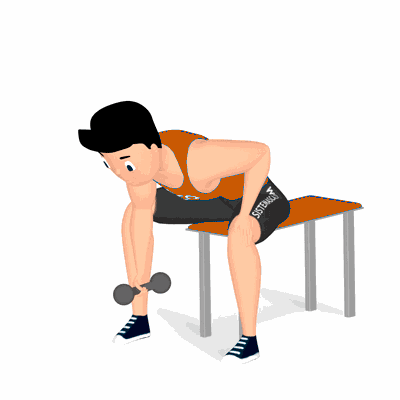

Rosca Concentrada

Exercício para fortalecimento e hipertrofia dos bíceps, com enfoque aos músculos bíceps braquiais. Realiza de forma unilateral, proporciona maior controle durante a execução.
Ficha Técnica
Tipo: Musculação
Grupo Muscular: Bíceps
Aparelho: Nenhum
Músculos: Nenhum
Como realizar
- Utilize um dumbbells ou halter;
- Sente na extremidade de um banco, pernas afastadas, pegue um halter com uma das mãos;
- Joelhos flexionados, pés firmes ao solo, apoie o cotovelo na parte interna da coxa próximo ao joelho;
- Segure o peso mantendo o cotovelo estendido, a pegada deverá ser neutra;
- Apoie a mão que está livre sobre a outra perna para auxiliar na estabilização;
- Cabeça e costas alinhadas e com esforço dos músculos do bíceps, suba o peso flexionando o cotovelo;
- Retorne à posição inicial de forma controlada, repita os movimentos.
 RC STORE
RC STORE